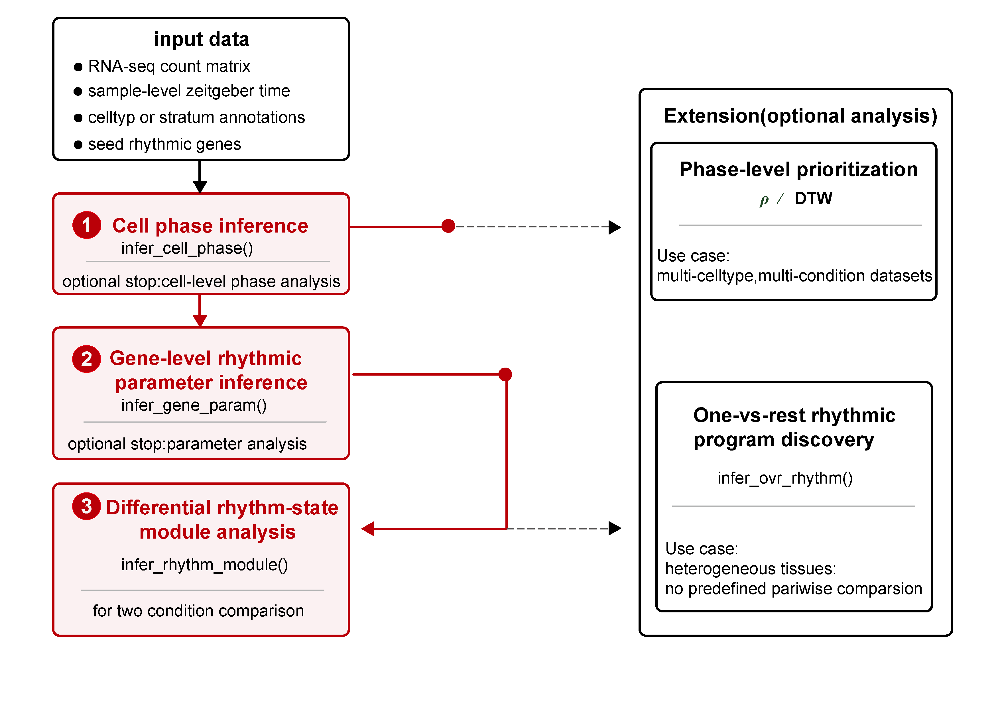

Cell-level circadian phase inference and rhythm-state remodeling for single-cell transcriptomes
scRhythmBayes is an R package for phase-resolved circadian analysis in heterogeneous single-cell transcriptomic data.
The package is designed to infer latent cell-level circadian phase, estimate gene-level rhythmic parameters, and characterize condition- and cell-type-resolved rhythm-state remodeling. It provides a core workflow for cell phase inference, rhythmic parameter estimation, and differential rhythm-state module analysis, together with extension analyses for one-vs-rest rhythmic program discovery, DTW-based phase-distribution similarity, and circular phase-concentration rho analysis.

Overview
scRhythmBayes organizes single-cell circadian analysis into one core workflow and several extension workflows.
Core workflow
The core workflow follows the main analysis logic of the method:
Cell-level circadian phase inference
Infer latent circadian phase for each cell from seed rhythmic genes.Gene-level rhythmic parameter inference
Estimate rhythmic parameters, including mesor, mean expression, amplitude, phase, dropout rate, likelihood-ratio statistics, and FDR.Differential rhythm-state module analysis
Classify genes into interpretable rhythm-state remodeling modules between two biological conditions.
Extension analyses
Additional analysis branches are provided for heterogeneous or multi-cell-type datasets:
One-vs-rest rhythmic program discovery
Identify cell-type-specific rhythmic programs by comparing one target cell type against all remaining cell types.DTW-based phase-distribution similarity analysis
Compare circular cell-phase distributions across celltype-by-condition combinations.Circular phase-concentration rho analysis
Summarize the concentration of inferred cell phases within cell types, groups, and optional sample-level units.
Installation
The package can be installed from GitHub:
install.packages("remotes")
remotes::install_github("Liwei-DynamicsLab/scRhythmBayes")Load the package:
library(scRhythmBayes)Check the installed version:
packageVersion("scRhythmBayes")Note: if the GitHub repository is private, installation requires GitHub authentication and repository access.
Example data
scRhythmBayes includes an example dataset for testing the complete workflow.
data("srb_example_data")
names(srb_example_data)
dim(srb_example_data$Count)
class(srb_example_data$Count)
dim(srb_example_data$meta)
head(srb_example_data$meta)Example output:
[1] "Count" "meta"
[1] 1000 4000
[1] "dgCMatrix"
attr(,"package")
[1] "Matrix"
[1] 4000 6
cell ZT celltype condition T_true Theta_true
Cell00001 Cell00001 0 1 A 23.3400755 6.1104175
Cell00002 Cell00002 0 1 B 23.7670342 6.2221950
Cell00003 Cell00003 0 1 B 0.9221928 0.2414295
Cell00004 Cell00004 0 1 B 1.9315598 0.5056812
Cell00005 Cell00005 0 1 A 0.9730132 0.2547343
Cell00006 Cell00006 0 1 A 1.1848616 0.3101960The example object contains:
| Object | Description |
|---|---|
srb_example_data$Count |
Gene-by-cell sparse count matrix with 1,000 genes and 4,000 cells |
srb_example_data$meta |
Cell-level metadata containing cell ID, sampling time, cell type, condition, and simulated true phase |
Metadata columns:
| Column | Description |
|---|---|
cell |
Cell identifier matched to the count matrix column names |
ZT |
Sampling Zeitgeber time |
celltype |
Simulated cell-type label |
condition |
Simulated group or condition label |
T_true |
Simulated true circadian time in hours |
Theta_true |
Simulated true circadian phase in radians |
T_true and Theta_true are available only in the simulated example dataset and are used for demonstration and validation. Real single-cell datasets usually do not contain these two columns.
Basic input objects:
count <- srb_example_data$Count
metadata <- srb_example_data$metaCore workflow
1. Infer cell-level circadian phase
res_phase <- infer_cell_phase(
count = srb_example_data$Count,
metadata = srb_example_data$meta,
ZT_by = "ZT",
strata_by = "celltype",
Species = "mouse",
setseed = 1,
Verbose = FALSE
)
head(res_phase)Example output:
# A tibble: 6 × 7
cell ZT_input stratum theta_pred ZT_pred Rbar r_cell
<chr> <dbl> <chr> <dbl> <dbl> <dbl> <dbl>
1 Cell00001 0 1 0.0444 0.169 0.999 0.999
2 Cell00002 0 1 6.21 23.7 0.979 0.998
3 Cell00003 0 1 0.570 2.18 0.994 0.998
4 Cell00004 0 1 0.829 3.17 0.991 0.990
5 Cell00005 0 1 6.26 23.9 0.995 0.999
6 Cell00006 0 1 0.553 2.11 0.998 0.999Example output columns:
| Column | Description |
|---|---|
cell |
Cell barcode or cell ID |
ZT_input |
Observed sampling Zeitgeber time |
stratum |
Stratum used during phase inference |
theta_pred |
Inferred cell-level circadian phase in radians |
ZT_pred |
Inferred cell-level circadian phase converted to 24-hour time |
Rbar |
Aggregate phase concentration statistic |
r_cell |
Cell-level phase reliability weight |
2. Estimate gene-level rhythmic parameters
For a basic condition-comparison example, the gene-level model can be run within one cell type.
cell_use <- as.character(srb_example_data$meta$celltype) == "1"
res_param <- infer_gene_param(
count = srb_example_data$Count[, cell_use, drop = FALSE],
metadata = srb_example_data$meta[cell_use, , drop = FALSE],
theta_pred = res_phase$theta_pred[cell_use],
r_cell = res_phase$r_cell[cell_use],
strata_by = "condition",
B = 10,
n_worker = 1,
setseed = 1,
Verbose = FALSE
)
head(res_param$param_long)
head(res_param$param_wide)Main outputs:
| Output | Description |
|---|---|
param_long |
Long-format gene-level rhythmic parameter estimates for each group |
param_wide |
Wide-format paired parameter table for downstream module analysis |
bootstrap_res |
Optional bootstrap confidence interval results |
Common gene-level parameters include:
| Column | Description |
|---|---|
gene |
Gene name |
Mesor |
Baseline rhythmic expression level |
Mean |
Mean expression level |
Amplitude |
Circadian oscillation amplitude |
Phase |
Gene-level rhythmic phase in radians |
Alpha |
Dispersion-related parameter |
Dropout_rate |
Estimated dropout rate |
LRT_stat |
Likelihood-ratio test statistic |
P_value |
Nominal rhythmicity test P value |
FDR |
Multiple-testing adjusted rhythmicity significance |
3. Infer differential rhythm-state modules
res_module <- infer_rhythm_module(
param_wide = res_param$param_wide,
compare_by = "condition",
group1 = "A",
group2 = "B",
out_dir = NULL,
Verbose = FALSE
)
head(res_module$module_result)Example output:
# A tibble: 6 × 27
gene compare_by group1 group2 FDR_A FDR_B Amplitude_A Amplitude_B Phase_A Phase_B delta_phi_rad
<chr> <chr> <chr> <chr> <dbl> <dbl> <dbl> <dbl> <dbl> <dbl> <dbl>
1 Cdkn1a condition A B 9.80e- 79 1.51e- 59 2.59 2.76 3.72 3.77 0.0473
2 Mmp14 condition A B 9.17e- 63 4.54e- 55 3.03 2.80 3.98 4.06 0.0742
3 Clock condition A B 6.84e-143 3.48e-119 3.67 3.50 6.04 5.99 -0.0541
4 Per2 condition A B 5.74e- 67 8.81e- 58 2.72 2.28 3.40 3.40 -0.00221
5 Per1 condition A B 3.10e- 53 1.02e- 44 2.51 2.46 4.72 4.76 0.0322
6 Bmal1 condition A B 1.43e- 16 3.39e- 21 2.54 3.01 1.34 1.31 -0.0251The module analysis assigns genes to interpretable rhythm-state remodeling classes based on rhythmicity, amplitude remodeling, and phase remodeling between two groups.
4. Visualize rhythm-state modules
hm_module <- plot_module_heatmap(
count = srb_example_data$Count[, cell_use, drop = FALSE],
res_phase = res_phase[cell_use, , drop = FALSE],
gene_meta = res_module$module_result,
metadata = srb_example_data$meta[cell_use, , drop = FALSE],
group_by = "condition",
group1 = "A",
group2 = "B"
)
hm_module
plot(hm_module, module_id = 0)
p_polar <- plot_module_polar(
gene_meta = res_module$module_result,
module_id = 7,
group1 = "A",
group2 = "B"
)
p_polar$plotExtension workflow 1: one-vs-rest rhythmic program discovery
The one-vs-rest branch is designed for heterogeneous tissues or multi-cell-type datasets. It compares each target cell type against all remaining cell types to identify cell-type-specific rhythmic programs.
res_ovr_param <- infer_gene_param(
count = srb_example_data$Count,
metadata = srb_example_data$meta,
theta_pred = res_phase$theta_pred,
r_cell = res_phase$r_cell,
strata_by = "celltype",
B = 10,
n_worker = 1,
setseed = 1,
Verbose = FALSE
)
res_ovr <- infer_ovr_rhythm(
param_long = res_ovr_param$param_long,
group_by = "celltype",
q_cut = 0.05,
amp_cut = 0.25,
Verbose = FALSE
)
head(res_ovr$ovr_result)Example output:
gene TargetCellType RestCellTypes rhythm_pattern FDR_group1 FDR_group2 Mean_group1 Mean_group2 Amplitude_group1
1 Cdkn1a 1 2,3,4 Other 4.906370e-135 7.512171e-145 0.9727523 0.6754654 2.686816
2 Mmp14 1 2,3,4 Other 2.205527e-114 2.929127e-116 0.5518791 0.6751436 2.874521
3 Clock 1 2,3,4 Other 1.837581e-294 7.247446e-124 0.6533396 0.7569091 3.604569
4 Per2 1 2,3,4 Other 2.542876e-123 1.088094e-130 0.8148060 1.1573551 2.487120
5 Per1 1 2,3,4 Other 2.759640e-97 6.822243e-166 0.7445542 0.9958452 2.457057
6 Bmal1 1 2,3,4 Other 3.691279e-37 4.777116e-95 0.0962345 0.3231072 2.737424Visualize one-vs-rest rhythmic programs:
ht_ovr <- plot_ovr_heatmap(
count = srb_example_data$Count,
res_phase = res_phase,
ovr_result = res_ovr$ovr_result,
metadata = srb_example_data$meta,
celltype_by = "celltype",
Verbose = FALSE
)
ht_ovr
plot(ht_ovr)Main output columns:
| Column | Description |
|---|---|
gene |
Gene name |
TargetCellType |
Target cell type |
RestCellTypes |
Pooled non-target cell types |
rhythm_pattern |
One-vs-rest rhythm-state pattern |
FDR_group1 |
Rhythmicity FDR in the target group |
FDR_group2 |
Rhythmicity FDR in the rest group |
Mean_group1, Mean_group2
|
Mean expression in target and rest groups |
Amplitude_group1, Amplitude_group2
|
Rhythmic amplitude in target and rest groups |
Phase_group1, Phase_group2
|
Rhythmic phase in target and rest groups |
Delta_Mean |
Target-minus-rest mean difference |
Delta_Amp |
Target-minus-rest amplitude difference |
target_specific_flag |
Whether the gene is classified as target-specific |
Extension workflow 2: DTW-based phase-distribution similarity
The DTW branch compares circular phase distributions between celltype-by-condition combinations.
dtw_res <- run_dtw_similarity(
res_phase = res_phase,
metadata = srb_example_data$meta,
celltype_by = "celltype",
group_by = "condition",
min_cell = 10,
Verbose = FALSE
)
dtw_res
head(dtw_res$histogram)
dtw_res$similarityExample histogram output:
combo cell_type Group bin bin_start bin_end bin_mid prop
1 1 | A 1 A 1 0.0000000 0.2617994 0.1308997 0.07370518
2 1 | A 1 A 2 0.2617994 0.5235988 0.3926991 0.05179283
3 1 | A 1 A 3 0.5235988 0.7853982 0.6544985 0.03784861
4 1 | A 1 A 4 0.7853982 1.0471976 0.9162979 0.02589641
5 1 | A 1 A 5 1.0471976 1.3089969 1.1780972 0.07370518
6 1 | A 1 A 6 1.3089969 1.5707963 1.4398966 0.03585657Example similarity matrix:
1 | A 1 | B 2 | A 2 | B 3 | A 3 | B 4 | A 4 | B
1 | A 1.00000000 0.5258293 0.5254280 0.5121285 0.3678544 0.01576747 0.3168803 0.6216232
1 | B 0.52582928 1.0000000 0.2482149 0.3303387 0.2933876 0.00000000 0.1401936 0.3610806
2 | A 0.52542801 0.2482149 1.0000000 1.0000000 0.2476438 0.25802896 0.2154369 0.5784490
2 | B 0.51212846 0.3303387 1.0000000 1.0000000 0.5154377 0.58143845 0.1062025 0.5468284
3 | A 0.36785437 0.2933876 0.2476438 0.5154377 1.0000000 0.72335525 0.4392088 0.2753267
3 | B 0.01576747 0.0000000 0.2580290 0.5814384 0.7233553 1.00000000 0.1779542 0.4694300Plot DTW similarity heatmap:
ht_dtw <- plot_dtw_heatmap(
dtw_res = dtw_res
)
ht_dtw
plot(ht_dtw)Main outputs:
| Output | Description |
|---|---|
data |
Merged cell-level phase and metadata table |
histogram |
Circular phase histogram for each celltype-by-group combination |
distance |
Pairwise DTW distance matrix |
similarity |
Scaled 0-to-1 DTW similarity matrix |
annotation |
Annotation table for heatmap rows and columns |
Extension workflow 3: circular phase-concentration rho analysis
The rho branch summarizes how concentrated inferred cell phases are within each cell type and condition.
Group-level rho summary
rho_res <- run_phase_rho(
res_phase = res_phase,
metadata = srb_example_data$meta,
celltype_by = "celltype",
group_by = "condition",
theta_by = "theta_pred",
group_levels = c("A", "B"),
min_cell = 10,
Verbose = FALSE
)
rho_resPlot rho values:
p_rho <- plot_phase_rho(rho_res)
p_rho$plotSample-level rho summary
If a sample column is available, run_phase_rho() can also summarize rho at the sample level and perform sample-level group comparisons within each cell type.
The example dataset does not contain real biological sample IDs. The following code creates artificial sample labels for demonstration only.
set.seed(1)
meta_rho_test <- srb_example_data$meta
if (!"cell" %in% colnames(meta_rho_test)) {
meta_rho_test$cell <- rownames(meta_rho_test)
}
meta_rho_test$Sample <- NA_character_
sample_per_group <- 4
split_key <- interaction(
meta_rho_test$celltype,
meta_rho_test$condition,
drop = TRUE
)
for (kk in levels(split_key)) {
idx <- which(split_key == kk)
meta_rho_test$Sample[idx] <- sample(
paste0("S", seq_len(sample_per_group)),
size = length(idx),
replace = TRUE
)
}
rho_res_sample <- run_phase_rho(
res_phase = res_phase,
metadata = meta_rho_test,
celltype_by = "celltype",
group_by = "condition",
sample_by = "Sample",
theta_by = "theta_pred",
group_levels = c("A", "B"),
min_cell = 10,
Verbose = FALSE
)
head(rho_res_sample$rho_sample)Example sample-level rho output:
cell_type Group Sample n_cell rho mean_phase_rad mean_phase_hour
1 1 A S1 138 0.03936473 3.0985686 11.835660
2 1 A S2 121 0.10892079 0.9783530 3.737033
3 1 A S3 120 0.12955172 0.3413518 1.303868
4 1 A S4 123 0.01671531 1.7440895 6.661931
5 1 B S1 119 0.07526560 1.3112934 5.008772
6 1 B S2 137 0.14094304 0.2920608 1.115590Plot sample-level rho values:
p_rho_sample <- plot_phase_rho(rho_res_sample)
p_rho_sample$plotTutorials
Detailed tutorials are available from the package website.
Extension analyses
- Rhythm-state module analysis
- One-vs-rest rhythmic program discovery
- DTW and rho phase-prioritization analysis ### Phase visualization
| Function | Description |
|---|---|
plot_phase_scatter() |
Compare inferred phase with sampling time |
plot_phase_circle() |
Visualize circular cell-phase distributions |
plot_phase_flower() |
Visualize phase distributions by sampling time |
plot_phase_rose() |
Plot rose-style phase distributions |
Extension analyses
| Function | Description |
|---|---|
infer_ovr_rhythm() |
Identify one-vs-rest cell-type-specific rhythmic programs |
plot_ovr_heatmap() |
Plot one-vs-rest rhythm-state heatmap |
run_dtw_similarity() |
Run DTW-based phase-distribution similarity analysis |
plot_dtw_heatmap() |
Plot DTW similarity or distance heatmap |
run_phase_rho() |
Summarize circular phase concentration rho |
plot_phase_rho() |
Plot rho by cell type and group |
Notes
scRhythmBayes is intended for phase-resolved analysis of single-cell transcriptomic datasets where cells are collected across circadian or time-of-day sampling points. The core workflow focuses on latent cell-phase inference and rhythm-state remodeling analysis. The extension workflows support additional biological questions, including cell-type-specific rhythmic program discovery and comparison of inferred phase distributions across cell types and conditions.
The package is under active development. Function interfaces and tutorials may be updated as the manuscript and reproducibility workflows are finalized.